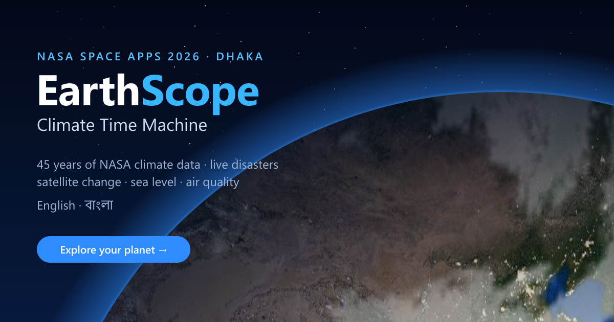
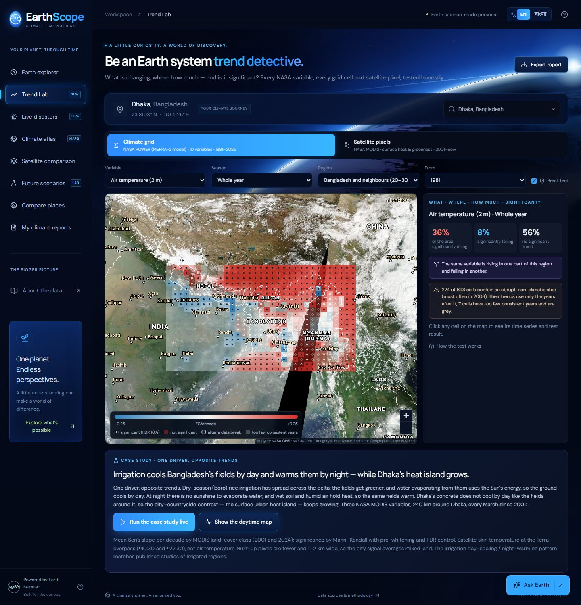
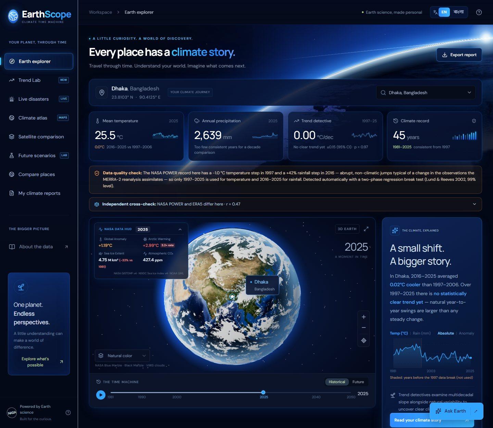
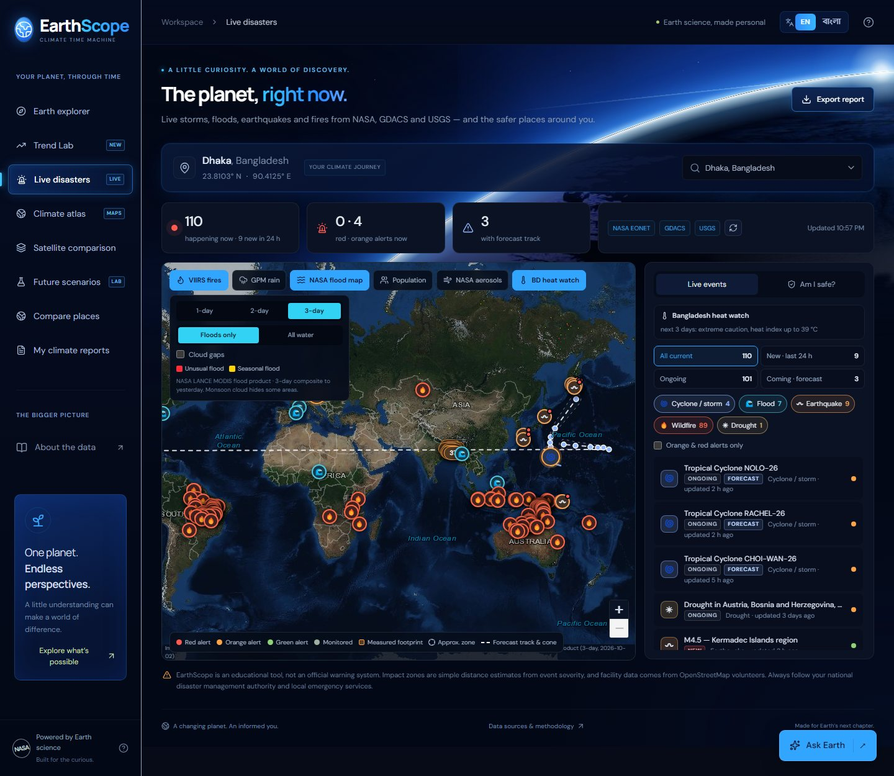
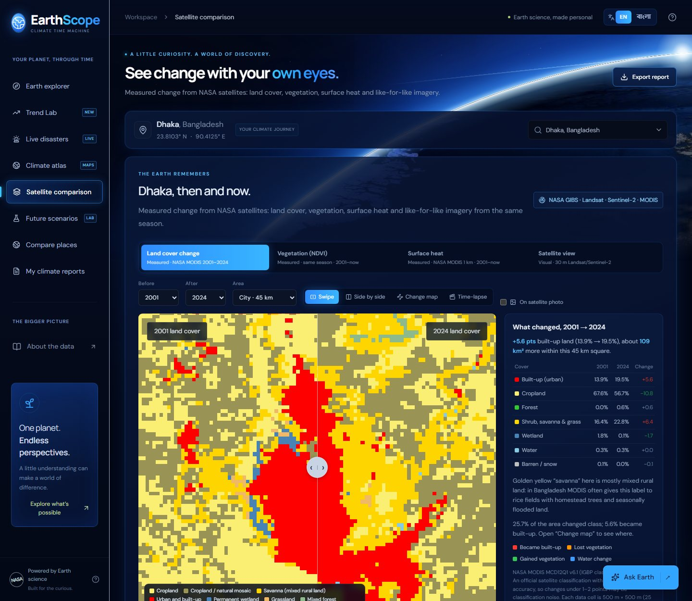
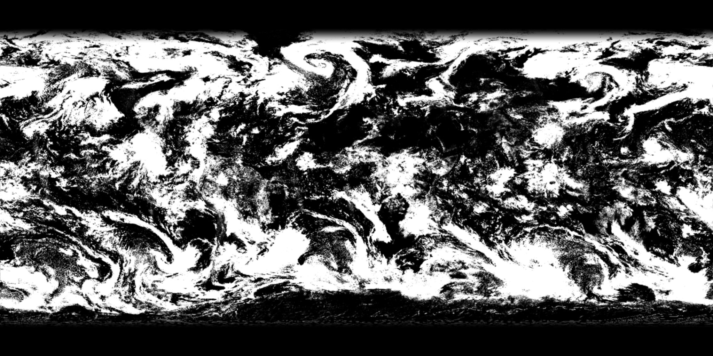

NASA SPACE APPS CHALLENGE 2026 · TEAM BRIEFING
EarthScope
Earth System Trend Detective — the complete project report, A to Z

Everyone on the team should read sections 1–2 (what we built and how it answers the challenge), 7 (our findings) and 19 (how to present and defend it). Sections 3–6 explain the app and the science; developers continue with 9–15. Section 17 lists what EarthScope does not claim — know it before talking to judges.
EarthScope is a live web app (earthscope-climate.vercel.app) that turns NASA Earth-observation and model data into answers anyone can check: what is changing, where, how much, and is it significant? It is built for Dhaka and Bangladesh, works for any place on Earth, and runs fully in English and বাংলা.
| Part | In one line |
|---|---|
| Trend Lab challenge core | Maps significant trends for 10 NASA POWER variables in 5 seasons and for MODIS surface temperature (day/night) and greenness, with Mann–Kendall + Sen's slope + FDR, per-cell break testing and a live “one driver, opposite trends” case study. |
| Earth explorer | 3D globe with daily real clouds; 45-year record of any place with the trend detective, data-quality check and ERA5 cross-check. |
| Live disasters | Storms, floods, quakes, fires right now; “Am I safe?”, shelters outside danger zones, heat and air-quality warnings, alerts, offline safety pack. |
| Climate atlas | World → country → district choropleths 1981–2025 with play-through and rankings. |
| Satellite comparison | Measured land-cover, vegetation and surface-heat change, time-lapse 2001–2024, swipe, 30 m imagery. |
| Future scenarios | What-if sliders and IPCC AR6 sea-level projections next to ground height. |
| Compare & Reports | Two places side by side; 8-page bilingual reports (citizen / student / planner) with PDF, CSV and QR. |
| Ask Earth | AI guide grounded only in EarthScope's data, answering in English or Bangla, with an offline fallback. |
| Challenge asks | EarthScope's answer | Where |
|---|---|---|
| Variables from NASA missions or NASA models | Model: NASA POWER / MERRA-2 (air temperature, max and min temperature, rainfall, relative and specific humidity, root-zone soil wetness, wind, sunshine, cloud). Missions: MODIS Terra (day and night land-surface temperature, NDVI, land cover), VIIRS, Landsat/HLS, GPM, GISTEMP, NSIDC. | Trend Lab, Explorer, Satellite |
| Visualize how they change over time | Trend maps, time series with Sen trend lines for any cell or pixel, climate stripes, time-lapse 2001–2024, globe time machine, atlas animation. | All pages |
| What is changing | Choose any of 13 variables and 5 seasons (whole year, winter, pre-monsoon, monsoon, post-monsoon) or any month for satellite products. | Trend Lab |
| Where | Every grid cell (0.5° × 0.625°) or 1–2 km pixel is mapped: red rising, blue falling, dots where significant; the land-cover breakdown says on what kind of land. | Trend Lab map |
| How much | Sen's slope per decade (robust median of all pairwise slopes), with % of area rising/falling and per-class means. | Trend Lab panel |
| Is it significant? | Mann–Kendall test with trend-free pre-whitening (autocorrelation) and the Benjamini–Hochberg false-discovery rate across the map, plus a break test so data artefacts are not called trends. Single places also get a 95% interval and an autocorrelation-corrected t-test. | Trend Lab, Explorer |
| Opposite trends in different regions, same process | The map flags when one variable rises in part of a region and falls in another. The live case study shows irrigation cooling fields by day and warming them by night, and city vs countryside diverging — one driver, opposite signs. | Trend Lab case study |
| Earth's interconnected system | The case study links three variables (daytime heat, night-time heat, vegetation) to one physical mechanism (evaporation from irrigated fields), with land cover explaining where. | Trend Lab |
EarthScope is a free web app (it also installs on a phone) that answers four questions for any place: How has the climate here changed? What is dangerous right now? How has the land changed? What could the future look like?
Bangladesh is among the countries most exposed to climate change: heat waves, monsoon floods, cyclones and storm surges, sea-level rise on a sinking delta, and some of the worst air in the world. The data to understand these risks exist — NASA and other agencies publish them openly — but they are scattered across dozens of portals, in technical formats, in English, and often with traps (data breaks, colour-coded images, uncertain trends) that lead non-experts to wrong conclusions.
EarthScope uses NASA Earth-science data as its core (NASA POWER, GIBS imagery from MODIS, VIIRS, Landsat/HLS, GPM, EONET events, GISTEMP, SEDAC population, LANCE flood product) and adds partner data where NASA has no product for the job (ECMWF ERA5 for validation, Copernicus CAMS for air quality, IPCC AR6 for sea level, OpenStreetMap for shelters).
Every page has its own web address, so a link can be shared directly. Heavy parts (3D globe, maps, report) load only when you open them.



A choropleth map that zooms World → country → states/divisions → districts. Shows temperature change, mean temperature, rainfall change or annual rainfall for every year 1981–2025, with play-through animation, climate stripes, a fastest-warming ranking and NASA imagery of that year. Each region is break-tested separately.

Compares two years for the same square (45, 90 or 240 km). Four modes:
| Mode | What it measures | NASA product |
|---|---|---|
| Land cover change | Share of built-up, cropland, forest, water, etc. in each year; km² of new built-up land; change map. Time-lapse plays every year 2001–2024 with a built-up growth chart. On-map colour key; optional overlay on a present-day satellite photo. | MODIS MCD12Q1 (IGBP), 500 m, yearly |
| Vegetation (NDVI) | Greenness in the same season of both years (3 composites averaged), dense-vegetation share, greener/browner areas. | MODIS MOD13Q1, 250 m, 16-day |
| Surface heat | Daytime ground/roof temperature, area mean, hot-spot intensity (urban heat island), and where land warmed more than its surroundings. | MODIS MOD11A2 LST, 1 km, 8-day |
| Satellite view | Like-for-like 30 m photos: automatic search for the clearest pass in the same month of both years; haze removal. | HLS Landsat 8/9 + Sentinel-2; MODIS 7-2-1 |
Views: Swipe (drag the handle), Side by side, Change map and (land cover) Time-lapse.
Two climate records side by side (same NASA variables, same years), each break-tested, with a statistical verdict on whether one is really changing faster than the other (overlapping 95% intervals).
An 8-page A4 assessment for any place: cover and key findings in IPCC likelihood language; climate record charts; climate extremes from daily data (hot days, warm nights, humid-heat days, heavy rain, dry spells); satellite evidence; a risk profile where every risk shows the measured evidence behind it; “right now” (hazards, heat, air quality, shelters, official contacts); methods, sources and limitations; QR code and share link. Three editions — Citizen, Student, Planner — in English or বাংলা. Save as PDF, download CSV, saved in the browser.
A chat panel on every page. Answers come from Claude (when an Anthropic key is configured) or a free open AI model, grounded only in EarthScope's computed data and live feeds, with sources and follow-up questions. If AI is unavailable it falls back to a rule-based offline guide. It answers in the interface language (Bangla when বাংলা is selected).
NASA POWER is a reanalysis (MERRA-2): a weather model constantly corrected by observations. When the set of observations changes (new satellites, stations lost), the series can jump. Over Bangladesh, POWER temperature drops about 1 °C in 1997 and rainfall jumps again around 2016 — not real climate.
Method: two-phase regression with a common slope (Lund & Reeves 2002). For each possible break year we fit “trend” vs “trend + step” and compute an F statistic; the maximum F is compared with 99% critical values we computed by Monte-Carlo simulation (20,000 random series per length). A break must also be large enough to matter (≥ 0.3 °C, or ≥ 15% of mean rainfall). Years before a break are shown grey and excluded from every trend. Code: lib/homogeneity.ts, lib/climate.ts.
ERA5 (ECMWF / Copernicus) is a separate reanalysis with a different model and assimilation system. For each place EarthScope downloads ERA5 daily data (1981–2025), makes annual values and compares them with POWER: year-to-year correlation, average bias, trends over the same years, rainfall ratio. Most importantly it runs the break test on the difference series POWER − ERA5: a step there proves the break belongs to one dataset, not to the climate (the “reference series” method of relative homogenisation). Code: lib/crosscheck.ts, /api/crosscheck.
lib/stats.ts.From NASA POWER daily data, following the WMO ETCCDI index conventions with fixed thresholds: hot days (Tmax ≥ 35 °C), warm nights (Tmin ≥ 25 °C), humid-heat days (wet-bulb ≥ 27 °C), frost days, hottest day, heavy-rain days (≥ 50 mm), wettest day, longest dry spell. Computed only over the break-free years. Code: lib/extremes.ts.
NASA GIBS serves measured products as coloured images using fixed published colour maps. EarthScope downloads the PNG images and converts each pixel back to its value using those colour maps:
Comparisons always use the same product and the same season in both years, so a difference reflects the land, not the sensor. Code: lib/earth-change.ts.
One April can be hotter than another everywhere because of weather. So besides the area-mean change, EarthScope removes the area-wide shift and marks pixels that warmed or cooled ≥ 1.5 °C more than the area as a whole — typically new buildings and lost trees (warmer) or new water and parks (cooler). It also reports hot-spot intensity (mean of the hottest 10% minus the median), a standard surface urban-heat-island measure.
lib/air-quality.ts.lib/sea-level.ts.
The server downloads the NOAA-20 and Suomi-NPP true-colour images of a day plus the previous 6 days. Clouds move but ice, snow and deserts don't, so the darkest value of each pixel over the past days is the ground; only what is brighter (and white) on the chosen day is cloud. Taking the darker of the two satellite passes removes ocean sun-glint. Built in about 8 seconds, cached for a year per date, pre-built every night by a scheduled job. Code: lib/clouds.ts, /api/clouds.
Impact zones are distance estimates from magnitude, wind speed or alert level (or measured footprints where GDACS provides them); cyclone positions along forecast tracks are interpolated in time. Shelters, hospitals and assembly points come from OpenStreetMap; any inside a hazard zone are hidden. This is a screening aid, never an official warning. Code: lib/hazards.ts, lib/safe-places.ts.
Code: lib/trends.ts, lib/trend-lab.ts, components/trend-lab.tsx, /api/trend-grid; tests in tests/trends.test.ts (including a textbook FDR example and a planted-step case).
This is the strongest story to tell judges: it shows why careful data handling matters.
| Question | Naive answer (raw NASA POWER) | EarthScope's answer |
|---|---|---|
| Is Dhaka warming? | Full record 1981–2025 shows cooling — because of the artificial 1997 drop. | The 1997 step is detected (≈ −1 °C) and excluded. POWER after 1997 shows no clear trend (0.00 °C/decade). |
| Is the 1997 drop real? | Cannot tell. | No. The POWER − ERA5 difference series itself jumps −1.0 °C in 1997–98: the fault is in POWER. |
| So what is the real trend? | — | ERA5 has no break and shows +0.21 °C per decade over 1981–2025 (+0.24 since 1997). Agreement POWER vs ERA5 after 1997 is weak (r = 0.47), so EarthScope shows the cross-check openly. |
| How has the land changed? | — | Built-up share of the 45 km Dhaka square: 13.9% (2001) → 19.5% (2024), about 109 km² more. Outskirts warmed more than their surroundings (surface heat change map). |
| Is the air safe? | — | On test days the US AQI was 151–168 (“Unhealthy”), PM2.5 ≈ 6× the WHO daily guideline. |
| Sea level? | — | Central Dhaka ≈ 19 m above sea level → not directly flooded by the sea, but backwater, waterlogging and salinity reach inland; the delta is sinking several mm/year in many places. |
Numbers were produced by the live app on 3 October 2026; air quality and hazards change daily.
Trend Lab, NASA POWER, Bangladesh and neighbours (20–30°N, 80–100°E, 693 cells), 1981–2025, FDR 10%:
| Variable · season | Naive analysis (no break test) | EarthScope (break-tested) |
|---|---|---|
| Air temperature · whole year | 39% rising · 21% falling | 36% rising · 8% falling · 224 cells had a step (most often 2008) |
| Rainfall · monsoon (Jun–Sep) | 69% rising · 0% falling | 50% rising · 1% falling · 287 cells had a step |
The temperature map also shows opposite signs inside one region: warming over the Himalayan foothills, eastern Bangladesh and Myanmar, and a cooling pocket over parts of the Ganges plain — a pattern often linked in research to aerosol haze and irrigation (a regional “warming hole”). EarthScope flags it; confirming the cause would need further study.
Trend Lab case study, NASA MODIS Terra, 240 km around Dhaka, every March 2001–2026, mean Sen's slope per decade by MODIS land cover; % = share of pixels with a significant trend (FDR 10%):
| NASA variable (March) | Built-up land | Cropland | Reading |
|---|---|---|---|
| Daytime surface temperature | −0.03 °C/decade | −0.58 °C/decade (33% sig.) | Fields cool by day; city–field contrast grows +0.55 °C/decade |
| Night-time surface temperature | +0.41 °C/decade | +0.41 °C/decade (19% sig.) | The same fields warm at night — opposite to daytime |
| Vegetation greenness (NDVI) | −0.007/decade | +0.047/decade (79% sig.) | Fields green up (more irrigation); the city browns |
| Source | Used for | How often |
|---|---|---|
| NASA POWER (MERRA-2) | Monthly and daily temperature, rainfall, wet-bulb; atlas grid | On demand, cached 1 day |
| NASA GIBS | Blue Marble, Black Marble, VIIRS clouds, MODIS land cover, NDVI, LST, aerosols, true colour, HLS Landsat/Sentinel-2, GPM rain, VIIRS fires, LANCE floods, SEDAC population | Daily to yearly products |
| NASA EONET | Open natural events | Every 5 min |
| NASA GISTEMP v4, NSIDC sea ice, NOAA GML CO₂ | Global context on the globe, in reports and Ask Earth | Built by script |
| ECMWF ERA5 (via Open-Meteo) | Independent cross-check of every record | Cached 30 days |
| Copernicus CAMS (via Open-Meteo) | Air-quality forecast | Cached 30 min |
| Open-Meteo forecast, geocoding, elevation | Heat outlook, place search, ground height (Copernicus GLO-90) | On demand |
| IPCC AR6 WGI | Sea-level projections, reference values | Static (published) |
| GDACS (UN / EC JRC) | Alert levels, cyclone tracks, footprints, surge | Every 5 min |
| USGS | Earthquakes M4.5+ | Every 5 min |
| OpenStreetMap (Overpass) | Shelters, hospitals, assembly points, fire stations | On demand |
| geoBoundaries, Natural Earth | Country, state and district boundaries | Static / cached |
| Esri World Imagery | Close-zoom map imagery and the photo underlay | Map tiles |
| Anthropic Claude / free open model | Ask Earth answers (optional) | Per question, rate-limited |
All sources are open or free for this use; attribution is shown in the app and in every report.
Why a server in the middle? It hides keys, combines and cleans feeds (e.g. EONET + GDACS + USGS into one hazard list), enforces rate limits, and lets the content-delivery network cache results at the right frequency so the app is fast and kind to the free data services.
| Area | Technology |
|---|---|
| Framework | Next.js 16 (App Router) with React 19 and TypeScript; also builds for Cloudflare Workers via vinext/Vite |
| UI | Custom CSS (dark navy theme), Radix UI primitives, lucide icons, sonner toasts; self-hosted Noto Sans Bengali |
| 3D & maps | three.js (custom day/night/cloud shader), Leaflet with NASA GIBS and Esri tiles |
| AI | Anthropic SDK (Claude, streaming, tool use) or any OpenAI-compatible free model; offline rule engine |
| Images | jpeg-js (server-side cloud mask), canvas decoding in the browser, sharp (link-preview image) |
| Quality | Vitest (51 tests), ESLint, TypeScript strict, i18n coverage checker |
| Hosting | Vercel (functions up to 60 s, CDN, daily cron); optional Upstash Redis for shared rate limits |
app/ Pages (one per view) and server API routes
page.tsx, disasters/, atlas/, satellite/, future/, compare/, reports/
api/*/route.ts 18 API routes (see section 9)
layout.tsx Site metadata, link preview, global CSS
*.css Styles: terra, maps, earthscope (theme), report (print)
components/
app/ App shell and views
shell.tsx State, routing, language, service worker, update prompt
nav.tsx, hero.tsx Sidebar, page headings, animated planet header
explore.tsx Explorer page: metric cards, data-quality note, story
crosscheck.tsx ERA5 cross-check card
views.tsx Future, Compare, Reports views
dialogs.tsx, lazy.tsx, error-boundary.tsx, charts.tsx, place-picker.tsx
earth-globe.tsx 3D globe
disaster-map.tsx Live disasters + "Am I safe?"
hazard-panels.tsx, my-places.tsx, air-quality.tsx
climate-atlas.tsx Atlas
trend-lab.tsx Trend Lab (grid + pixel engines, case study)
satellite-compare.tsx Satellite comparison (4 modes, swipe, time-lapse)
sea-level.tsx Sea-level panel
climate-report.tsx 8-page report
ask-earth.tsx AI chat
lib/ Science and data code (no UI)
stats.ts, homogeneity.ts, climate.ts, crosscheck.ts, extremes.ts
trends.ts, trend-lab.ts Mann–Kendall, Sen, FDR; grid and pixel trend analysis
earth-change.ts Land cover, NDVI, LST decoding and comparison
air-quality.ts, sea-level.ts, heat.ts, hazards.ts, hazard-feed.ts
safe-places.ts, safety-watch.ts, geo.ts, locate.ts, clouds.ts
ask-ai.ts, ask-rules.ts AI guide and offline guide
i18n.tsx, i18n-bn.ts, climate-bn.ts Languages
rate-limit.ts, telemetry.ts Protection and error reports
report/ Report model, data gathering, translations, share links
tests/ Vitest unit tests
scripts/ Data builders, i18n checker, OG image, build helpers
public/ Textures, data files, icons, service worker, og.png
About 14,000 lines of project code (excluding generated UI primitives), 13 commits in the improvement programme.
| Route | Purpose | Upstream |
|---|---|---|
/api/climate | Monthly temperature and rainfall record 1981–2025 for a point | NASA POWER |
/api/crosscheck | ERA5 annual series for the cross-check | Open-Meteo archive (ERA5) |
/api/trend-grid | Monthly values of one NASA POWER variable for every cell of a 10° tile (Trend Lab) | NASA POWER regional |
/api/extremes | Daily data → ETCCDI-style extreme indices | NASA POWER daily |
/api/power-grid | 10° tiles of gridded climate for the atlas | NASA POWER regional |
/api/boundaries | State/district boundaries | geoBoundaries |
/api/disasters | Unified live hazard feed with forecasts | EONET, GDACS, USGS |
/api/event-impact | People exposed, storm surge for one event | GDACS, SEDAC |
/api/heat | 7-day heat index and BMD heatwave class | Open-Meteo forecast |
/api/air | Air quality now + 5-day forecast | Copernicus CAMS |
/api/safe-places | Shelters, hospitals, assembly points nearby | OpenStreetMap Overpass |
/api/elevation | Ground height | Copernicus GLO-90 |
/api/imagery | Satellite snapshots (land cover, NDVI, LST, HLS, MODIS) | NASA GIBS WMS |
/api/clouds, /warm | Daily cloud mask for the globe; nightly pre-build | NASA GIBS VIIRS |
/api/places, /api/locate | Place search; approximate location fallback | Open-Meteo / GeoNames, IP lookup |
/api/ask | Ask Earth, streamed answers | Claude or free model |
/api/log | Receives browser error reports | — |
/api/version | Current build id (open tabs offer “Reload”) | — |
All routes validate their inputs (coordinates, dates, sizes) and costly routes are rate-limited per visitor with a daily cap per route.
t("English text"); lib/i18n-bn.ts holds the Bangla translation keyed by the English text (830+ strings). Missing strings fall back to English, never break.npm run i18n:check lists untranslated strings; the test suite fails if any is missing or if a translation drops a {placeholder}.t("…"), run npm run i18n:check -- --missing, add the Bangla line to lib/i18n-bn.ts, run npm test.| File | What it proves |
|---|---|
tests/stats.test.ts | Trend slopes, confidence intervals, autocorrelation correction, t-table values, p-value formatting |
tests/homogeneity.test.ts | Break test finds a planted step, ignores trends and tiny steps; regression test on the real Dhaka record (1997 break detected, no false “cooling”) |
tests/crosscheck.test.ts | Daily → annual aggregation, correlation, agreement verdict, break confirmed through the difference series |
tests/earth-change.test.ts | Every LST colour decodes exactly; relative-warming logic; composite calendars |
tests/i18n.test.ts | Translator, Bangla digits, every placeholder kept, 0 missing translations |
tests/trends.test.ts | Normal distribution, Sen's slope robustness, Mann–Kendall detection and no false alarm in noise, Benjamini–Hochberg worked example (incl. p = 0), season aggregation, grid analysis with a planted 1997 step (and what happens without the break test) |
tests/data.test.ts | AQI categories, IPCC sea-level consistency, extremes indices, share-link privacy and tamper safety |
/api/log.npx vercel deploy --prod --yes from the project folder (requires being logged in to the team's Vercel account). Vercel runs next build.vercel.json runs /api/clouds/warm daily at 00:15 UTC to pre-build the cloud map./api/version and show “A new version is available — Reload”. The service worker uses a fresh cache per build.client-error for browser errors).| Variable | Effect |
|---|---|
ANTHROPIC_API_KEY | Ask Earth uses Claude (best quality) and its tools |
UPSTASH_REDIS_REST_URL / _TOKEN | Rate limits shared by all server instances |
CRON_SECRET | Protects the nightly cloud job |
ASK_EARTH_RATE_LIMIT, ASK_EARTH_DAILY_LIMIT | AI question limits (default 12 per 10 min, 500 per day) |
ASK_EARTH_OPENAI_URL / _KEY / _MODEL | Use another free AI service (e.g. Groq) |
NEXT_PUBLIC_SITE_URL | Public address used in link previews |
Add them in Vercel → Settings → Environment Variables (never commit keys). None is required.
# one-time npm install npm run dev # local app at http://localhost:5173 npm test # 51 unit tests npm run lint # code style and React rules npm run i18n:check # Bangla coverage npx next build # production build (what Vercel runs) npx vercel deploy --prod --yes # publish
lib/ and add a test for it.t() with a Bangla translation.npm test, npm run lint, npx next build — all must pass.node scripts/build-globe-textures.mts | Refresh Blue Marble, Black Marble and the fallback cloud map |
node scripts/build-global-record.mts | Refresh GISTEMP, sea ice and CO₂ global record |
node scripts/build-world-climate.mts | Rebuild country climate series for the atlas |
node scripts/build-og-image.mjs | Rebuild the link-preview image |
The project started as “Terra”, a climate time machine with the NASA POWER explorer, globe, atlas, live disasters with “Am I safe?”, satellite comparison, scenarios and reports. It was then renamed EarthScope with a new dark navy/blue design, a realistic three.js globe, an animated planet header, moving clouds, a rewritten satellite comparison and an 8-page bilingual climate report.
| # | Improvement | Result |
|---|---|---|
| 1 | Version control | Clean Git history; ready to publish on GitHub |
| 2 | README | Rewritten: features, trust, setup, settings, architecture |
| 3 | Link preview | 1200×630 image from NASA textures + Open Graph/Twitter tags |
| 4 | Dead code | 47 unused UI components, database scaffolding, 15 packages removed |
| 5 | Code splitting | Shell 1.2 MB → under 48 KB; heavy parts load on demand |
| 6 | Page URLs | Every view has its own address; back button works |
| 7 | Full Bangla | 830+ strings, Bangla digits, Bangla AI answers, coverage test |
| 8 | Air quality | CAMS forecast card, NASA aerosol layer, safety status, report section |
| 9 | Sea level | IPCC AR6 projections + ground height + delta subsidence note |
| 10 | Surface heat | MODIS LST mode with exact decoding and relative-change map |
| 11 | ERA5 cross-check | Independent validation; confirmed the 1997 artefact |
| 12 | Tests | 51 automated tests |
| 13 | Daily clouds | Server-built daily cloud map + nightly job |
| 14 | Protection | Rate limits (Upstash-ready) and error reporting |
| 15 | Refactor | 1,000-line main file split into 9 focused modules |
Know these before presenting — judges respect teams that state their limits.
| Limitation | What it means / what we do about it |
|---|---|
| Reanalysis, not stations | NASA POWER and ERA5 are ~50 km / ~25 km grid estimates, not Dhaka weather-station readings. BMD station data would be the next step (not openly available). |
| POWER and ERA5 disagree after 1997 in Dhaka | Correlation is only 0.47; we show both and explain it rather than hide it. |
| Scenarios are not projections | The 2050 sliders are a simple sensitivity test, labelled as such; sea-level numbers are IPCC global means. |
| Hazard zones are estimates | Distance-based screening, not official warnings; shelters depend on OpenStreetMap volunteers' mapping. |
| Land-cover accuracy | MODIS land cover is ~74% accurate overall; changes under 1–2 points may be noise; Bangladesh rural land is often labelled “savanna”. |
| Satellite resolution | Land cover 500 m, LST 1 km, NDVI 250 m — good for city trends, not individual buildings (the 30 m view is visual only). |
| Surface vs air temperature | LST is the temperature of roofs and ground at ~10:30, hotter than air; clouds leave gaps. |
| POWER rainfall trends | Even after break handling, POWER rainfall rises almost everywhere around Bangladesh; treat it with caution and compare with ERA5 or GPM. |
| MODIS Terra orbit drift | Since about 2020 Terra's overpass time has been drifting earlier, which can slightly cool recent daytime surface temperatures. It affects city and fields alike, so the city–field contrast is robust; absolute daytime trends should be cross-checked with Aqua. |
| Field-significance choice | FDR at 10% is a standard choice for climate maps; a stricter level shows fewer significant cells. The map and the method are shown so experts can judge. |
| AI answers | Grounded and sourced, but can still be wrong; we say so in the chat. |
| Free services | Depends on free public APIs; caching, retries and fallbacks reduce but cannot remove outages. |
| Time | Show | Say |
|---|---|---|
| 0:00 | Explorer, globe spinning | “NASA data say a lot about our planet — if you read them carefully. EarthScope is an Earth-system trend detective, built for Dhaka. These clouds are real, from NASA satellites two days ago.” |
| 0:30 | Dhaka cards → data-quality note → ERA5 card | “Raw NASA POWER says Dhaka is cooling. We detect a 1997 fault, prove it with an independent dataset, ERA5, and recover the real warming: about +0.2 °C per decade.” |
| 1:15 | Trend Lab → temperature map | “Now every grid cell in the region: red warming, blue cooling, dots significant after false-discovery-rate control. What, where, how much, and is it significant — one screen.” |
| 1:50 | Untick Break test, then tick it again | “Watch: a naive analysis says 21% of this region is cooling. With break testing it's 8%. Data artefacts, not climate. This is the trap most trend tools fall into.” |
| 2:30 | Run the case study live; Show the daytime map | “The challenge says one process can push trends in opposite directions. Here it is, from NASA MODIS pixels: irrigation cools Bangladesh's fields by day, warms the same fields at night, and they green up — while Dhaka's heat island grows.” |
| 3:30 | Satellite → Land cover → Time-lapse | “And why: 109 km² of new built-up land around Dhaka since 2001.” |
| 4:00 | Switch to বাংলা; Live disasters → Am I safe? | “All of it in Bangla, and useful today: hazards, heat, unhealthy air and the nearest shelters outside danger zones.” |
| 4:30 | Export a report (Planner, বাংলা) | “A report a city planner can print — with every method and source. EarthScope: honest trends, for the people who live them.” |
| Why Mann–Kendall and not just linear regression? | It is rank-based, so robust to outliers and non-normal data like rainfall; it is the standard test in climate trend studies. We still show regression with confidence intervals for single places. |
| What is the false-discovery rate and why use it? | Testing ~700 cells at p < 0.05 would mark ~35 as “significant” by pure chance. FDR (Benjamini–Hochberg, 10%) controls the share of false discoveries across the whole map — the approach recommended for climate maps (Wilks 2016). |
| How do you handle autocorrelation? | Trend-free pre-whitening before Mann–Kendall; for single places, an effective-sample-size correction (Santer et al. 2000). |
| How do you know the 1997 / 2008 steps are fake? | A statistical break test finds them, they appear in hundreds of cells at once, and the independent ERA5 dataset doesn't have them: the POWER − ERA5 difference jumps exactly then. |
| Is the irrigation story real or a coincidence? | Three independent NASA measurements agree with one physical mechanism (day cooling, night warming, greening on cropland), the result is computed live and is significant in a third to four-fifths of cropland pixels after FDR, and it matches published research on irrigated regions. |
| Why not use weather stations? | BMD station data are not openly available; we use two independent global datasets and state the limit. |
| Is this an official warning system? | No — it is educational. It always links to BMD, FFWC, DDM and 999/1090. |
| Can it work outside Bangladesh? | Yes — Trend Lab regions and pixel analyses work for any place; Bangladesh extras switch on automatically there. |
| Anomaly | Difference from a reference period (e.g. +0.5 °C warmer than the first decade). |
| AQI | Air Quality Index (US EPA scale 0–500); above 150 is “Unhealthy”. |
| Autocorrelation | Neighbouring years resemble each other, so there is less independent information than the number of years suggests. |
| Break / inhomogeneity | An artificial jump in a data series caused by a change in how it was measured. |
| CAMS | Copernicus Atmosphere Monitoring Service (EU air-quality forecasts). |
| Confidence interval (95%) | The range that contains the true trend with 95% confidence. |
| ERA5 | ECMWF's global reanalysis; used here to cross-check NASA POWER. |
| ETCCDI | WMO expert team that defines standard climate-extreme indices. |
| FDR (false-discovery rate) | Method that controls how many “significant” results on a map are false alarms when many places are tested at once. |
| GIBS | NASA Global Imagery Browse Services — serves satellite imagery and products. |
| Heat index | “Feels-like” temperature combining heat and humidity. |
| HLS | Harmonized Landsat Sentinel-2: 30 m imagery made comparable across satellites. |
| IGBP | The 17-class land-cover scheme used by MODIS. |
| IPCC AR6 / SSP | The UN climate panel's 6th assessment; SSPs are emission pathways (low to very high). |
| LST | Land-surface temperature: how hot the ground and roofs are. |
| Mann–Kendall test | Rank-based test for a consistent upward or downward trend. |
| MERRA-2 | NASA's reanalysis behind NASA POWER. |
| MODIS / VIIRS | NASA satellite instruments imaging the whole Earth daily. |
| NDVI | Vegetation index from satellite light (higher = greener). |
| p-value | Chance of seeing a trend this strong if there were none; below 0.05 counts as significant. |
| Reanalysis | A weather model continuously corrected by observations, giving complete global data. |
| Sen's slope | Median of all pairwise slopes — a robust “how much per year”. |
| Surface urban heat island | Cities' ground surfaces being hotter than their surroundings. |